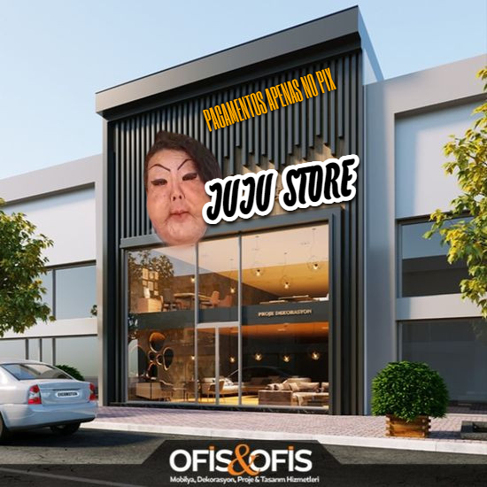
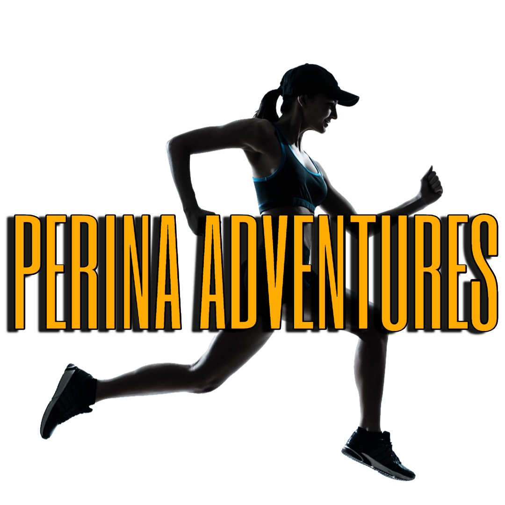

Projetos
Birds of a Feather - Orquestral
Loja Juju do Pix

Clique aqui
Descrição: Site inteiramente feito por HTML e CSS. O site simula uma loja com design simples e direto.
Perina Adventures

Clique aqui
Descrição: Jogo feito inteiramente no JavaScript. O jogo engloba os atletas refugiados olimpicos, mais especificamente a Atleta Perina. Desbrave um jogo único de RPG baseado em texto puro!